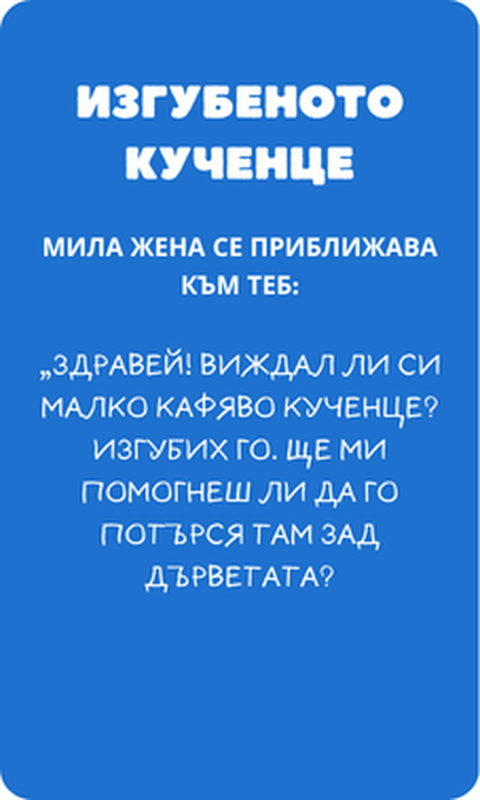
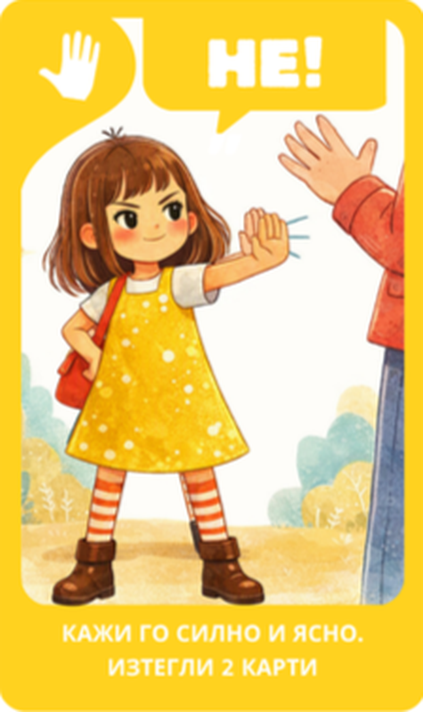

Твоето дете играе и учи със Смелчовците как да:
Обяснявам хиляди пъти, но тя е толкова доверчива…
Детето знае, че не трябва да взема бонбони от непознати и че не трябва да се качва в чужда кола.
Но в реална ситуация - когато е само и объркано, когато (не)познатият е усмихнат и любезен или изглежда безпомощен - ще разпознае ли опасността? И по-важното - ще съумее ли да действа правилно? А може би ще замръзне от любезност или страх?
Теорията помага, но умението за действие се изгражда само с повторение - и то много преди да е нужно.
На какво учи играта?
„Смелчовци в беда“ е изградена върху съвременните препоръки за детска безопасност - включително разграничението между "непознат" и "човек с лоши намерения", което е много по-полезно за децата от простото "не говори с непознати."
-
Учи детето да се доверява на интуицията си, когато нещо не му се струва наред, да казва ясно и без вина „Не!“, и да пита родителите си преди да предприеме каквото и да е.
-
Учи детето да разпознава безопасни места и безопасни възрастни, към които да се обърне при нужда - например униформен служител или продавач, не непременно познат човек. И че може просто да си тръгне от опасна ситуация, без да е длъжно да обяснява или да бъде учтиво.
-
Учи детето да споделя с близките си всяка ситуация, която го е накарала да се почувства неудобно - без значение колко малка изглежда.
-
Играта въвежда и конкретни принципи за безопасност - семейна парола, правилото „само възрастни помагат на възрастни“, и защо никой доверен човек никога не иска от дете да пази тайна.
-
Децата се запознават и с реакциите, които им пречат в реална ситуация - замръзване, прекалена учтивост, разсеяност. Не за да се срамуват, а за да се сещат навреме какво да направят и да ги преодоляват с практика.
-
Учи детето, че да поискаш помощ не е слабост, а разумен избор. И че когато сте заедно с приятел, е достатъчно поне един от двамата да познае правилната реакция - защото да си в екип също означава да се пазите взаимно.
Как работи играта?
-
1
Изтегляте ситуация.
(Не)познат иска помощ. Предлага изкушение. Кара те да пазиш тайна. Какво правиш?

-
2
Всеки избира карта от ръката си.
Кажи НЕ. Бягай. Кажи на близък. Правилната реакция, в точния момент.

-
3
Играчите си помагат и обсъждат заедно.
Всички отговарят правилно - всички споделят наградата.
Какво казват децата и родителите?
Представете си този момент…
На площадката сте. Заговаряте се с друга майка и за секунда изпускате детето си от поглед. Когато се обръщате, виждате непознат да говори с него. Но вместо вълна на паника, вие усещате... спокойствие.
Наблюдавате как детето ви прави крачка назад, казва нещо кратко, но уверено, обръща се и с бързи крачки идва при вас, за да ви разкаже какво се е случило. Без страх, без объркване, без колебание.
Това е усещането за истинска увереност. Това е моментът, в който осъзнавате, че:
-
Вашето дете знае как да се пази самостоятелно.
-
Изградили сте невидима броня от умения и инстинкти.
-
Постоянната тревожност е заменена с дълбоко вътрешно спокойствие.
-
Най-накрая можете да си отдъхнете, знаейки, че сте му дали най-ценния подарък.
Въпроси и отговори
-
„Смелчовци в беда“ е игра с карти за деца на възраст от 5 до 9 години и техните близки — родители, баби и дядовци и приятели. Подходяща е за 2 до 5(6) играча. Една игра трае около 10 минути.
-
На 4 години играта може да работи в опростен вариант с активното участие на родител.
На 10 — детето вероятно ще търси по-голямо предизвикателство. Подготвяме версия за по-големи деца — запиши се в списъка и ще те уведомим първи.
-
Играта учи чрез различни ситуации и изиграване на глас. Всяко правилно действие се избира, казва, и обсъжда.
Една игра на седмица в продължение на месец — децата изиграват десетки сценария.
Наградата в края прави победата обща, семейна цел, не индивидуално постижение.
-
След като са запознати с играта — да. Но препоръчваме поне първите няколко игри да са с родител. Разговорът след това е също толкова важен, колкото и самата игра, затова препоръчваме да се играе с поне един възрастен.
-
Не. Фокусът е върху това което детето прави — не върху опасността. Всяка ситуация показва правилната реакция.
Илюстрациите са топли и меки и не създават тревожност и страх.
Играта не показва какво се случва, ако не отговориш правилно — просто семейството не споделя заедно наградата.
-
Всяка игра е различна.
Картите се разпределят по различен начин всяка игра — сценариите се появяват в различен ред, различни играчи получават различни карти. Препоръчваме кратки сесии от ~10 минути, редовно — рефлексът се изгражда с повторение.
-
Работим по финалните илюстрации и подготвяме първия тираж. Записалите се в списъка ще бъдат уведомени първи и ще имат възможност да закупят играта преди публичното обявяване.